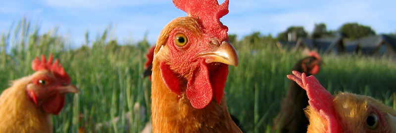
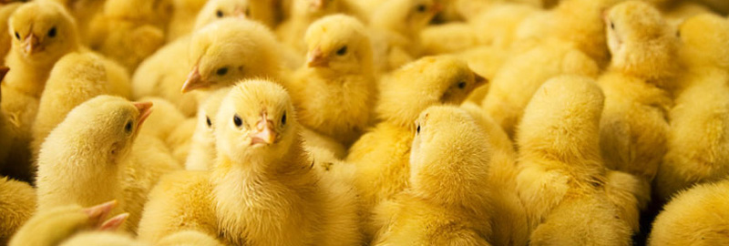
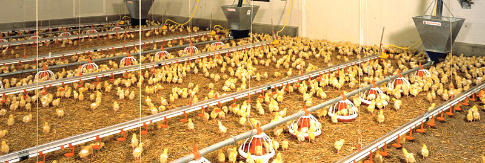

Vakcinace
Tři cesty k imunitě
Hromadná aplikace přes napájecí systém – šetrná ke zvířatům a vhodná pro velká hejna.
Veterinární péče o drůbež · Morava
Prevence, diagnostika a terapie v užitkových i rozmnožovacích chovech drůbeže. Tři veterináři, jedna odpovědnost – zdraví vašeho hejna.
[ 00 ] Naše motto
Neznáme všechno, ale víme, kam se obrátit. Když problém přesáhne naše zkušenosti, sáhneme po síti kolegů a státních veterinárních ústavů – a správná odpověď se k vám dostane.
[ 01 ] Služby
Užitkové a rozmnožovací chovy – kur domácí, krůta, holubi, pštrosi.
Aplikace do vody, sprejem nebo injekčně – podle typu a věku hejna.
Rutinní i speciální vyšetření, patoanatomický rozbor přímo na místě.
Bakteriologie, virologie a histopatologie – od odběru po výsledek.
Se státními veterinárními ústavy a s kolegy v ČR i v zahraničí.
Spolehlivý a dlouhodobý servis a veterinární služba na vysoké úrovni.
[ 02 ] Chované druhy
Každý druh má jiné nároky na prostředí, výživu i vakcinační program. Vedeme užitkové i rozmnožovací chovy – a známe rozdíly.
[ 03 ] Prevence & diagnostika
Vakcinace
Hromadná aplikace přes napájecí systém – šetrná ke zvířatům a vhodná pro velká hejna.
Odběry vzorků
veterinární lékaři
v terénu
druhy drůbeže
pod odborným vedením
Spolupráce



[ 04 ] Spolupráce krok za krokem
Krok 1
Typ chovu, druh drůbeže, aktuální stav hejna a vaše cíle.
Krok 2
Klinické a patoanatomické vyšetření, odběr vzorků pro laboratoř.
Krok 3
Vakcinační a preventivní program přizpůsobený vašemu provozu.
Krok 4
Pravidelné kontroly a rychlá reakce, když je potřeba.
[ 05 ] Působnost
Sídlíme ve Valašské Bystřici a za chovateli jezdíme po celé Moravě – od Ostravska po jižní Moravu.
Sídlo PTÁCY s.r.o.[ 06 ] Tým